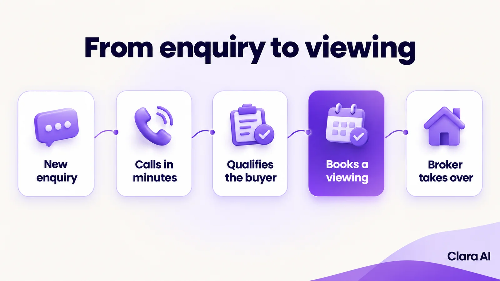
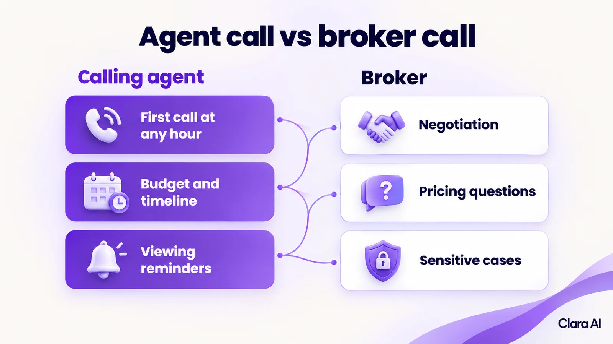

An AI calling agent for Dubai real estate phones every new enquiry within minutes, says it is an automated assistant, asks a few qualifying questions and books a viewing or a video walkthrough. A broker takes over for negotiation, pricing and anything sensitive, with a short summary of the call.
It is past midnight in Dubai. A buyer in Toronto, where the working day is still under way, sends an enquiry about an off-plan launch through a property portal. The brokers spent the day at viewings and have gone home. The enquiry waits until morning. By the time someone calls back, the buyer has already spoken to three other brokers.
This article is for owners and sales heads of Dubai brokerages and developer sales teams who do not have a tech team. It explains how an AI calling agent works, what the call sounds like and where your brokers stay in charge.
Dubai sales teams work in conditions that make slow follow-up almost inevitable.
Speed often decides who gets the first real conversation. A buyer who has enquired with several brokers tends to keep talking to the ones who answer.
An AI calling agent is software that makes and takes phone calls in natural spoken language, answers from information your company has approved, books the next step and hands over to a person with the full context.
For the basics, read What Is an AI Calling Agent and How Does It Work?
It does not replace your brokers. It makes the first call, so a broker's first call is with a buyer whose needs are already written down.
A typical call to a new enquiry runs like this.
If nobody answers, it retries at times you agree and sends a message. The lead is then marked for a broker.

The agent qualifies and books. Your brokers decide and negotiate. A broker takes over for:

The broker receives the buyer's name, area, budget range, timeline, financing and location, plus the outcome of the call. The buyer does not repeat anything. Your team also reads call transcripts regularly. Where the agent struggled, the script or the source information is corrected.
Yes. Both are routine work that brokers rarely have time for.
Before a new launch, the agent can call past enquirers who asked about a matching area or unit type, and who agreed to be contacted. It asks whether they are still looking, shares approved details and offers a viewing or a walkthrough.
Before a viewing, it confirms with the buyer and reschedules if plans have changed. Your brokers then spend their time on viewings that will actually happen.
The call is rarely the last step. After it, the buyer can receive a WhatsApp message with the agreed viewing details and the brochure your team has approved. The same assistant answers follow-up questions on WhatsApp and on your website, using the same approved information and the same record.
WhatsApp has a rule that shapes this. A business can reply freely for 24 hours after the customer's last message. After that, it can send only pre-approved templates. So the first message after a call is a template, sent with the buyer's agreement. Clara AI builds these as AI chatbots for WhatsApp and your website.
Clara AI's calling agents and chatbots work in English, Hindi and Arabic. The same approach applies across the wider Gulf.
Without a dashboard, a sales head hears about problems when a broker mentions them. With one, a single screen shows:
An operations intelligence dashboard can combine these with your CRM and ad data. Our guide to a real estate sales dashboard explains the idea in more detail.
Consent, UAE data-protection rules and telemarketing rules apply to AI calls, and Clara AI builds within them. This is not legal advice, so check your own plans with your legal adviser.
A short list gets a first version moving quickly.
Clara AI has built a presales voice agent for Rustomjee, a real estate developer, that follows up enquiries. It has also built calling for Hiranandani in real estate. For Arihant Spaces, it built a CRM and ads dashboard with follow-up rules. These clients are in India, and Clara AI works with clients across India and the Gulf. We publish no results here, so we make no claims, and your own build depends on your sources, projects and rules. See our client work.
Clara AI builds, deploys and manages AI calling agents in six steps.